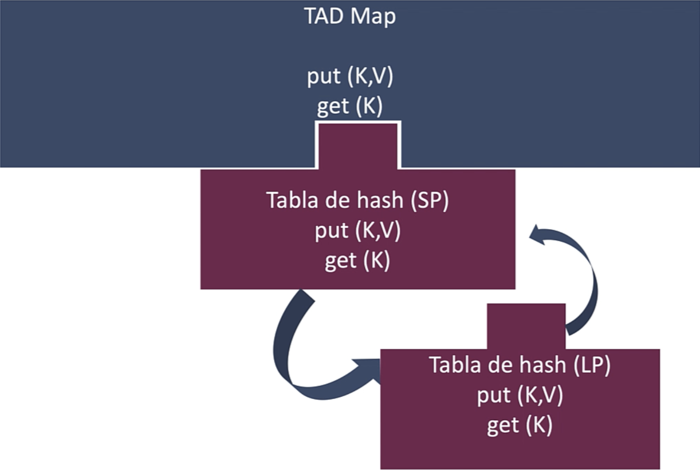
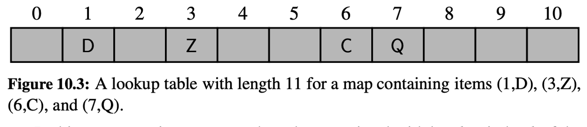
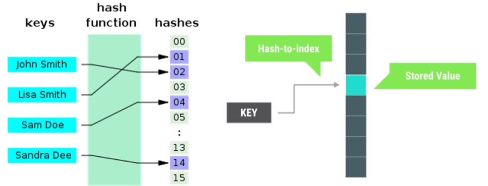
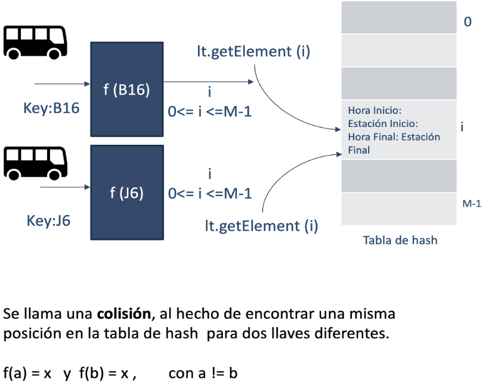
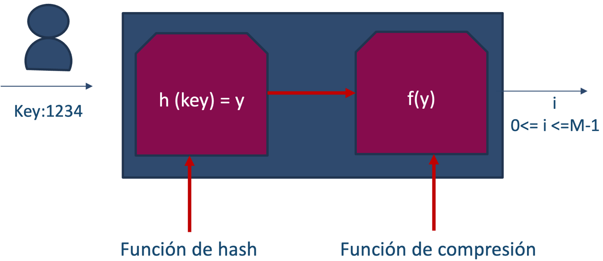
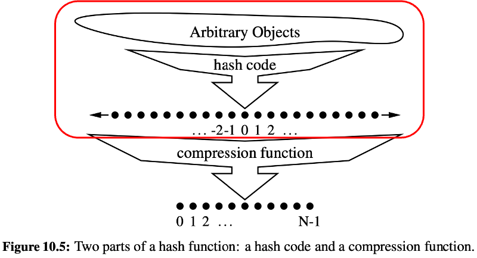
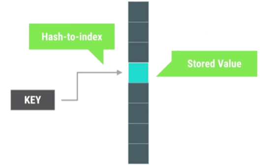
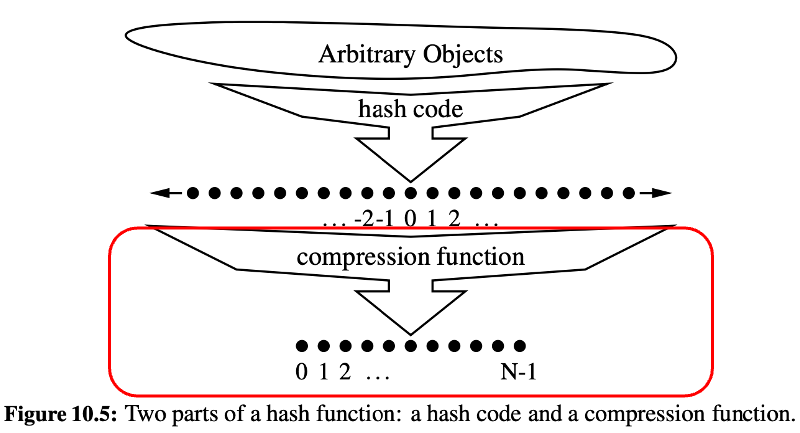

<!DOCTYPE html>
<html lang="en">
  <head>
    <meta charset="utf-8" />
    <meta name="viewport" content="width=device-width, initial-scale=1.0, maximum-scale=1.0, user-scalable=no" />

    <title></title>
    <link rel="stylesheet" href="dist/reveal.css" />
    <link rel="stylesheet" href="dist/theme/iph.css" id="theme" />
    <link rel="stylesheet" href="plugin/highlight/spyder.css" />
	<link rel="stylesheet" href="css/layout.css" />
	<link rel="stylesheet" href="plugin/customcontrols/style.css">


    <script defer src="dist/fontawesome/all.min.js"></script>

	<script type="text/javascript">
		var forgetPop = true;
		function onPopState(event) {
			if(forgetPop){
				forgetPop = false;
			} else {
				parent.postMessage(event.target.location.href, "app://obsidian.md");
			}
        }
		window.onpopstate = onPopState;
		window.onmessage = event => {
			if(event.data == "reload"){
				window.document.location.reload();
			}
			forgetPop = true;
		}

		function fitElements(){
			const itemsToFit = document.getElementsByClassName('fitText');
			for (const item in itemsToFit) {
				if (Object.hasOwnProperty.call(itemsToFit, item)) {
					var element = itemsToFit[item];
					fitElement(element,1, 1000);
					element.classList.remove('fitText');
				}
			}
		}

		function fitElement(element, start, end){

			let size = (end + start) / 2;
			element.style.fontSize = `${size}px`;

			if(Math.abs(start - end) < 1){
				while(element.scrollHeight > element.offsetHeight){
					size--;
					element.style.fontSize = `${size}px`;
				}
				return;
			}

			if(element.scrollHeight > element.offsetHeight){
				fitElement(element, start, size);
			} else {
				fitElement(element, size, end);
			}		
		}


		document.onreadystatechange = () => {
			fitElements();
			if (document.readyState === 'complete') {
				if (window.location.href.indexOf("?export") != -1){
					parent.postMessage(event.target.location.href, "app://obsidian.md");
				}
				if (window.location.href.indexOf("print-pdf") != -1){
					let stateCheck = setInterval(() => {
						clearInterval(stateCheck);
						window.print();
					}, 250);
				}
			}
	};


        </script>
  </head>
  <body>
    <div class="reveal">
      <div class="slides"><section  data-markdown><script type="text/template"><!-- .slide: class="has-light-background drop" data-background-color="#f8f8f8" -->
<div class="" style="position: absolute; left: 0px; top: 0px; height: 700px; width: 960px; min-height: 700px; display: flex; flex-direction: column; align-items: center; justify-content: center" absolute="true">

### Estructura de Datos y Algoritmos - EDA

####  *Tablas de hash*

[Eduardo Rosales](mailto:ee.rosales24@uniandes.edu.co)

Departamento de Ingeniería de Sistemas y Computación

Universidad de los Andes
</div></script></section><section  data-markdown><script type="text/template"><!-- .slide: class="has-light-background drop" data-background-color="#f8f8f8" -->
<div class="" style="position: absolute; left: 0px; top: 0px; height: 700px; width: 960px; min-height: 700px; display: flex; flex-direction: column; align-items: center; justify-content: center" absolute="true">

### Tabla de hash




- Implementación de una tabla de símbolos (o mapa)
- Permite búsquedas, inserciones y eliminaciones en tiempo O(1) en promedio
- Ideal para acceder rápidamente a datos en aplicaciones como bases de datos y caches
</div></script></section><section  data-markdown><script type="text/template"><!-- .slide: class="has-light-background drop" data-background-color="#f8f8f8" -->
<div class="" style="position: absolute; left: 0px; top: 0px; height: 700px; width: 960px; min-height: 700px; display: flex; flex-direction: column; align-items: center; justify-content: center" absolute="true">

### Tabla de hash con direccionamiento directo (1/4)





- Se tiene un mapa con `n` valores y N es la capacidad total del arreglo
- Todas las llaves son enteras
- Todas las llaves están en el rango 0 a `N - 1`
	- En donde `N >= n`
</div></script></section><section  data-markdown><script type="text/template"><!-- .slide: class="has-light-background drop" data-background-color="#f8f8f8" -->
<div class="" style="position: absolute; left: 0px; top: 0px; height: 700px; width: 960px; min-height: 700px; display: flex; flex-direction: column; align-items: center; justify-content: center" absolute="true">

### Tablas de hash – direccionamiento directo (2/4)


- Permite un acceso de tiempo constante O(1)
- Sacando provecho de que las llaves se pueden considerar índices de un arreglo
- Directamente, sin ningún tipo de conversión
</div></script></section><section  data-markdown><script type="text/template"><!-- .slide: class="has-light-background drop" data-background-color="#f8f8f8" -->
<div class="" style="position: absolute; left: 0px; top: 0px; height: 700px; width: 960px; min-height: 700px; display: flex; flex-direction: column; align-items: center; justify-content: center" absolute="true">

### Tablas de hash – direccionamiento directo (3/4)

-  Limitaciones del direccionamiento directo
	- ¿Es siempre posible reservar un tamaño de arreglo de tal forma que `N` siempre sea mayor o igual que `n`?
	- ¿Es siempre el caso en una aplicación que las llaves son enteros?
		- ¿Y son siempre enteros en rango (semi) contiguo?
</div></script></section><section  data-markdown><script type="text/template"><!-- .slide: class="has-light-background drop" data-background-color="#f8f8f8" -->
<div class="" style="position: absolute; left: 0px; top: 0px; height: 700px; width: 960px; min-height: 700px; display: flex; flex-direction: column; align-items: center; justify-content: center" absolute="true">

### Tablas de hash – direccionamiento directo (4/4)

- Contexto realista:

	- El arreglo debe tener un tamaño razonable
		- Ese tamaño debe ajustarse para hacer uso eficiente de la memoria
	- Las llaves no siempre son enteros
		- Menos aún enteros (semi) contiguos
</div></script></section><section  data-markdown><script type="text/template"><!-- .slide: class="has-light-background drop" data-background-color="#f8f8f8" -->
<div class="" style="position: absolute; left: 0px; top: 0px; height: 700px; width: 960px; min-height: 700px; display: flex; flex-direction: column; align-items: center; justify-content: center" absolute="true">

### El problema

¿Cómo hacer un mapeo eficiente de una llave cualquiera a los índices de una estructura de datos, por ejemplo, un arreglo?

- **La solución:**
	- Función hash
	- Convierte Llave → hash code → índice
	- Usar una tabla de hash basada en una función hash
</div></script></section><section  data-markdown><script type="text/template"><!-- .slide: class="has-light-background drop" data-background-color="#f8f8f8" -->
<div class="" style="position: absolute; left: 0px; top: 0px; height: 700px; width: 960px; min-height: 700px; display: flex; flex-direction: column; align-items: center; justify-content: center" absolute="true">

### Tabla de hash (1/2)

- Las tablas de hash son estructuras de datos que asocian llaves con valores
- Usan una función hash para convertir:
  - Llave → hash code → índice
	  - De un arreglo donde se almacena el valor
- La eficiencia de una tabla de hash reside en su capacidad de acceso a los datos
	- Ideal O(1) en promedio
- Se usan para mejorar la eficiencia de operaciones de:
  - Búsqueda
  - Inserción
  - Eliminación
</div></script></section><section  data-markdown><script type="text/template"><!-- .slide: class="has-light-background drop" data-background-color="#f8f8f8" -->
<div class="" style="position: absolute; left: 0px; top: 0px; height: 700px; width: 960px; min-height: 700px; display: flex; flex-direction: column; align-items: center; justify-content: center" absolute="true">

### Tabla de hash (2/2)




- Usa un arreglo para almacenar los valores
- Usa operaciones aritméticas para transformar las llaves
	- En hash codes y luego en índices válidos del arreglo
</div></script></section><section  data-markdown><script type="text/template"><!-- .slide: class="has-light-background drop" data-background-color="#f8f8f8" -->
<div class="" style="position: absolute; left: 0px; top: 0px; height: 700px; width: 960px; min-height: 700px; display: flex; flex-direction: column; align-items: center; justify-content: center" absolute="true">

### TAD - Tabla de hash


<html lang="es">
<head>
    <meta charset="UTF-8">
    <meta name="viewport" content="width=device-width, initial-scale=1.0">
    <title>Tabla de Operaciones de Hash Table</title>
    <style>
        table {
            width: 100%;
            border-collapse: collapse;
            font-family: Arial, sans-serif;
        }
        th, td {
            border: 1px solid black;
            padding: 10px;
            text-align: left;
        }
        th {
            background-color: #d4e1f5; /* Azul claro */
            font-weight: bold;
        }
        td:first-child {
            background-color: #ebebeb; /* Gris claro */
            font-weight: bold;
        }
    </style>
</head>
<body>

<table>
    <tr>
        <th>Operación</th>
        <th>Descripción</th>
    </tr>
    <tr>
        <td><code>new_hash_table()</code></td>
        <td>Crea una nueva tabla hash vacía</td>
    </tr>
    <tr>
        <td><code>put(key, value)</code></td>
        <td>Agrega una pareja &lt;key,value&gt; a la tabla. Si key ya existe, el valor se reemplaza con el nuevo</td>
    </tr>
    <tr>
        <td><code>get(key)</code></td>
        <td>Dada una llave, se retorna el valor asociado a dicha llave</td>
    </tr>
    <tr>
        <td><code>remove(key)</code></td>
        <td>Se elimina la pareja &lt;key,value&gt;, para una llave determinada</td>
    </tr>
    <tr>
        <td><code>contains(key)</code></td>
        <td>Informa si una llave se encuentra o no en la tabla</td>
    </tr>
    <tr>
        <td><code>size()</code></td>
        <td>Informa el número de llaves dentro de la tabla</td>
    </tr>
    <tr>
        <td><code>is_empty()</code></td>
        <td>Informa si la tabla está vacía</td>
    </tr>
    <tr>
        <td><code>key_set()</code></td>
        <td>Retorna una lista con todas las llaves en la tabla</td>
    </tr>
    <tr>
        <td><code>value_set()</code></td>
        <td>Retorna una lista con todos los valores en la tabla</td>
    </tr>
    <tr>
        <td><code>rehash()</code></td>
        <td>Cambia la capacidad de la tabla y realiza el rehash de todos los elementos</td>
    </tr>
</table>

</body>
</html>
</div></script></section><section  data-markdown><script type="text/template"><!-- .slide: class="has-light-background drop" data-background-color="#f8f8f8" -->
<div class="" style="position: absolute; left: 0px; top: 0px; height: 700px; width: 960px; min-height: 700px; display: flex; flex-direction: column; align-items: center; justify-content: center" absolute="true">

### Limitaciones de una tabla de hash (1/2)

¿Es siempre posible que la función de hash produzca un índice único para cada llave diferente?

- Principio de las cajas (principio de _Dirichlet_)
	- Si hay más llaves `n` que espacios disponibles `N`
	- Al menos dos llaves tendrán que compartir el mismo espacio
		- Al menos dos llaves tendrán asociado el mismo índice
</div></script></section><section  data-markdown><script type="text/template"><!-- .slide: class="has-light-background drop" data-background-color="#f8f8f8" -->
<div class="" style="position: absolute; left: 0px; top: 0px; height: 700px; width: 960px; min-height: 700px; display: flex; flex-direction: column; align-items: center; justify-content: center" absolute="true">

### Limitaciones de una tabla de hash (2/2)

- Idealmente, una función hash siempre produciría un índice único 
	- Para cada llave diferente
- En la práctica
- Improbable para una aplicación que maneje grandes cantidades de datos
	- Debido a que los recursos de memoria son limitados
	- Debido a que el tiempo de espera debe ser razonable
		- El tiempo de producción del hash code debe ser razonable
</div></script></section><section  data-markdown><script type="text/template"><!-- .slide: class="has-light-background drop" data-background-color="#f8f8f8" -->
<div class="" style="position: absolute; left: 0px; top: 0px; height: 700px; width: 960px; min-height: 700px; display: flex; flex-direction: column; align-items: center; justify-content: center" absolute="true">

### Colisión (1/2)


</div></script></section><section  data-markdown><script type="text/template"><!-- .slide: class="has-light-background drop" data-background-color="#f8f8f8" -->
<div class="" style="position: absolute; left: 0px; top: 0px; height: 700px; width: 960px; min-height: 700px; display: flex; flex-direction: column; align-items: center; justify-content: center" absolute="true">

### Colisión (2/2)

 ¿Qué pasaría si la función de hash retorna un hash code que produce el mismo índice para las llaves 'Pedro' y 'Juan'?
 
- Se daría una colisión
	- **Colisión**: Cuando para dos llaves se produce el mismo índice

	<br>

- ¿Es posible garantizar que no haya colisiones?
</div></script></section><section  data-markdown><script type="text/template"><!-- .slide: class="has-light-background drop" data-background-color="#f8f8f8" -->
<div class="" style="position: absolute; left: 0px; top: 0px; height: 700px; width: 960px; min-height: 700px; display: flex; flex-direction: column; align-items: center; justify-content: center" absolute="true">

### Las colisiones ocurren

- Hay un número limitado de índices disponibles
	- Ya que no siempre podemos asumir 
		- El uso de un arreglo de tamaño gigantesco
- La cantidad de llaves que puede usar un programa
	- Puede ser realmente enorme
		- Ej: Números de cédula de ciudadanía de todo un país
- Entonces, siempre habrá posibilidad de colisiones
	- Para diferentes llaves, se retornará un mismo índice
- Habrá que resolver esas colisiones
	- La solución debe ser eficiente
		- En uso de recursos computacionales
</div></script></section><section  data-markdown><script type="text/template"><!-- .slide: class="has-light-background drop" data-background-color="#f8f8f8" -->
<div class="" style="position: absolute; left: 0px; top: 0px; height: 700px; width: 960px; min-height: 700px; display: flex; flex-direction: column; align-items: center; justify-content: center" absolute="true">

### Propiedades de una función hash

- Método de producción de hash codes
- Debe ser **consistente**
	- Llaves idénticas, deben producir el mismo hash code
- Debe ser **eficiente** en cómputo
- Debe **distribuir uniformemente** las llaves
</div></script></section><section  data-markdown><script type="text/template"><!-- .slide: class="has-light-background drop" data-background-color="#f8f8f8" -->
<div class="" style="position: absolute; left: 0px; top: 0px; height: 700px; width: 960px; min-height: 700px; display: flex; flex-direction: column; align-items: center; justify-content: center" absolute="true">

### El por qué de las propiedades de una función hash (1/3)


- Método de producción de hash codes
	- **Debe ser consistente**
		- Llaves idénticas, deben producir el mismo hash code

	<br>

- En ausencia de consistencia
	- La tabla hash sería completamente inútil 
		- Para retornar el índice apropiado
			- Para una llave dada
</div></script></section><section  data-markdown><script type="text/template"><!-- .slide: class="has-light-background drop" data-background-color="#f8f8f8" -->
<div class="" style="position: absolute; left: 0px; top: 0px; height: 700px; width: 960px; min-height: 700px; display: flex; flex-direction: column; align-items: center; justify-content: center" absolute="true">

### El por qué de las propiedades de una función hash (2/3)

- Método de producción de hash codes
	- **Debe ser eficiente en cómputo**

	<br>

- En ausencia de eficiencia
	- Usar la tabla hash sería impráctico
		- Habría poca mejora o ninguna, con respecto a una alternativa
			- De complejidad O(n) o mayor
</div></script></section><section  data-markdown><script type="text/template"><!-- .slide: class="has-light-background drop" data-background-color="#f8f8f8" -->
<div class="" style="position: absolute; left: 0px; top: 0px; height: 700px; width: 960px; min-height: 700px; display: flex; flex-direction: column; align-items: center; justify-content: center" absolute="true">

### El por qué de las propiedades de una función hash (3/3)

- Método de producción de hash codes
	- Debe **distribuir uniformemente las llaves**

	<br> 
	
- Distribución uniforme:
	- Previene cuellos de botella
		- Buena distribución = menos colisiones
			- Colisiones inevitables pero reducibles
			- Disminuye necesidad de resolución de colisiones
</div></script></section><section  data-markdown><script type="text/template"><!-- .slide: class="has-light-background drop" data-background-color="#f8f8f8" -->
<div class="" style="position: absolute; left: 0px; top: 0px; height: 700px; width: 960px; min-height: 700px; display: flex; flex-direction: column; align-items: center; justify-content: center" absolute="true">

### Reducción de colisiones - Escenario real (1/2)

- Dividir la función hash code en **dos etapas**:

	<br>


- **Cálculo de un hash code**

	<br>

- **Mapeo del hash code generado a un índice entero**
	- En el rango de índices de un arreglo \[`0` a `N-1` ó `1 a N`\]
</div></script></section><section  data-markdown><script type="text/template"><!-- .slide: class="has-light-background drop" data-background-color="#f8f8f8" -->
<div class="" style="position: absolute; left: 0px; top: 0px; height: 700px; width: 960px; min-height: 700px; display: flex; flex-direction: column; align-items: center; justify-content: center" absolute="true">

### Reducción de colisiones - Escenario real (2/2)

- **Ventajas**:
	- El hash code puede ser cualquier entero
		- Incluso negativo
	- Lo anterior ayudará a minimizar colisiones

	<br>

- **Desventajas**:
	- El hash code no siempre sería usable como un índice
		- Podría ser negativo
		- Podría exceder la capacidad del arreglo
</div></script></section><section  data-markdown><script type="text/template"><!-- .slide: class="has-light-background drop" data-background-color="#f8f8f8" -->
<div class="" style="position: absolute; left: 0px; top: 0px; height: 700px; width: 960px; min-height: 700px; display: flex; flex-direction: column; align-items: center; justify-content: center" absolute="true">

### División de responsabilidades


</div></script></section><section  data-markdown><script type="text/template"><!-- .slide: class="has-light-background drop" data-background-color="#f8f8f8" -->
<div class="" style="position: absolute; left: 0px; top: 0px; height: 700px; width: 960px; min-height: 700px; display: flex; flex-direction: column; align-items: center; justify-content: center" absolute="true">

### Función de compresión


- Función de hash
	- Transforma una llave en un hash code




- El hash code puede ser negativo o exceder el límite del arreglo
</div></script></section><section  data-markdown><script type="text/template"><!-- .slide: class="has-light-background drop" data-background-color="#f8f8f8" -->
<div class="" style="position: absolute; left: 0px; top: 0px; height: 700px; width: 960px; min-height: 700px; display: flex; flex-direction: column; align-items: center; justify-content: center" absolute="true">

### `hash()` - Python (1/2)


- Retorna el valor hash de un objeto
	- Si el mismo tiene uno (es inmutable)
- Un objeto inmutable 
	- Ej: `int`, `bool`, `float`, `str`, `tuple`
- Tiene un valor hash que no cambia durante su tiempo de vida
	- Los valores hash son enteros
		- Se usan para comparar rápidamente llaves
</div></script></section><section  data-markdown><script type="text/template"><!-- .slide: class="has-light-background drop" data-background-color="#f8f8f8" -->
<div class="" style="position: absolute; left: 0px; top: 0px; height: 700px; width: 960px; min-height: 700px; display: flex; flex-direction: column; align-items: center; justify-content: center" absolute="true">

### `hash()` - Python (2/2)


- Retorna `TypeError` 
	- Si el objeto es mutable (ej: `list`, `dict`)
- El valor hash puede variar entre versiones del intérprete de Python
	- Y entre diferentes ejecuciones 
		- En el mismo o diferentes equipos
</div></script></section><section  data-markdown><script type="text/template"><!-- .slide: class="has-light-background drop" data-background-color="#f8f8f8" -->
<div class="" style="position: absolute; left: 0px; top: 0px; height: 700px; width: 960px; min-height: 700px; display: flex; flex-direction: column; align-items: center; justify-content: center" absolute="true">

### Produciendo hash codes en Python

```python
small_int_hash = hash(127)

big_int_hash = hash(12345678901234567890)

float_hash = hash(3.1416)

str_hash = hash('Hola Mundo')

# Los siguientes son valores ejemplo:

print(small_int_hash)  # → 127

print(big_int_hash)  # → 816463855166098135

print(float_hash)  # → 326507370104658947

print(str_hash)  # → -3006221771437495133 (Hash codes negativos son válidos)

hash([1, 2, 3])  # → TypeError (Ningún objeto mutable es hasheable)
```
</div></script></section><section  data-markdown><script type="text/template"><!-- .slide: class="has-light-background drop" data-background-color="#f8f8f8" -->
<div class="" style="position: absolute; left: 0px; top: 0px; height: 700px; width: 960px; min-height: 700px; display: flex; flex-direction: column; align-items: center; justify-content: center" absolute="true">

### ¿Y después de calcular el hash code?




¿Cómo convertir un hash code en un índice en un rango válido del array?
</div></script></section><section  data-markdown><script type="text/template"><!-- .slide: class="has-light-background drop" data-background-color="#f8f8f8" -->
<div class="" style="position: absolute; left: 0px; top: 0px; height: 700px; width: 960px; min-height: 700px; display: flex; flex-direction: column; align-items: center; justify-content: center" absolute="true">

### Función de compresión

- Transforma un hash code en un índice entero en el rango del arreglo




- ¿Qué métodos existen para convertir un hash code en un índice de un array?
</div></script></section><section  data-markdown><script type="text/template"><!-- .slide: class="has-light-background drop" data-background-color="#f8f8f8" -->
<div class="" style="position: absolute; left: 0px; top: 0px; height: 700px; width: 960px; min-height: 700px; display: flex; flex-direction: column; align-items: center; justify-content: center" absolute="true">

### Método de división

- Convierte cualquier entero `x` 
	- Ej: hash code en un índice válido de un arreglo
- Utiliza el residuo de la división de `x` por `N` 
	- Para determinar el índice
- La función hash `h` se define como:
  - `h(x) = |x| mod N`
- Genera un índice válido dentro del rango `[0, N-1]` o  \[`1 a N`\]
- Asegura una distribución uniforme de índices 
	- Para una tabla hash con tamaño `N`
</div></script></section><section  data-markdown><script type="text/template"><!-- .slide: class="has-light-background drop" data-background-color="#f8f8f8" -->
<div class="" style="position: absolute; left: 0px; top: 0px; height: 700px; width: 960px; min-height: 700px; display: flex; flex-direction: column; align-items: center; justify-content: center" absolute="true">

### Operación de módulo con tablas hash (1/2)

- Módulo (%)
	- La operación de módulo (%) retorna el residuo de una división
		- Siempre resulta en un número entre 0 y el divisor menos uno 
			-  `0` y `N-1` para un divisor `N`
	- Ej:
		- Si tenemos `N=10`
			- Cualquier número `x` % `N` 
				- Estará en el rango de 0 a 9
</div></script></section><section  data-markdown><script type="text/template"><!-- .slide: class="has-light-background drop" data-background-color="#f8f8f8" -->
<div class="" style="position: absolute; left: 0px; top: 0px; height: 700px; width: 960px; min-height: 700px; display: flex; flex-direction: column; align-items: center; justify-content: center" absolute="true">

### Operación de módulo con tablas hash (2/2)

- Se usa en las tablas de hash para asegurar 
	- Que los índices no excedan el tamaño de la tabla
- Ej:
	- Si `x` es 37 y `N` es 10
	- 37 % 10 = 7, que está dentro del rango \[`0`, `N-1`\]

- Esto permite distribuir (uniformemente) las llaves en la tabla de hash
	- Evitando índices fuera de rango
</div></script></section><section  data-markdown><script type="text/template"><!-- .slide: class="has-light-background drop" data-background-color="#f8f8f8" -->
<div class="" style="position: absolute; left: 0px; top: 0px; height: 700px; width: 960px; min-height: 700px; display: flex; flex-direction: column; align-items: center; justify-content: center" absolute="true">

### Operación de módulo con tablas hash que inician en 1

- Adición de `+ 1`: 
	- Ajusta el rango de \[`0`, `N-1`\] a \[`1`, `N`\]
		- Adaptándose a una tabla de hash 
			- Cuya indexación comienza en `1` en lugar de `0`
	- Ej:
		- Si `x` es `37` y `N` es `10`
		- `37 % 10 = 7 + 1 = 8` que está dentro del rango \[`1`, `N`\]
- Es comúnmente usado cuando se una tabla hash que inicia desde `1`
</div></script></section><section  data-markdown><script type="text/template"><!-- .slide: class="has-light-background drop" data-background-color="#f8f8f8" -->
<div class="" style="position: absolute; left: 0px; top: 0px; height: 700px; width: 960px; min-height: 700px; display: flex; flex-direction: column; align-items: center; justify-content: center" absolute="true">

### Método de División - Elección de `N`

- `N` idealmente es un **número primo**
	- Para reducir colisiones en la distribución de índices
- Minimiza interferencia: 
	- Menos divisores comunes igual a menos índices repetidos
- Optimización matemática: 
	- Maximiza la dispersión de índices al ser divisor solo de 1 y sí mismo
- Reduce colisiones: 
	- Menos patrones repetitivos, disminuye las colisiones
- Distribuye más uniformemente: 
	- Asegura uso eficiente del espacio en la tabla hash
- Mejora rendimiento: 
	- Operaciones de inserción, búsqueda, y eliminación más rápidas
</div></script></section><section  data-markdown><script type="text/template"><!-- .slide: class="has-light-background drop" data-background-color="#f8f8f8" -->
<div class="" style="position: absolute; left: 0px; top: 0px; height: 700px; width: 960px; min-height: 700px; display: flex; flex-direction: column; align-items: center; justify-content: center" absolute="true">

### Método de División - Elección de N - No Primo


- Usando una tabla hash de tamaño 100 (no primo)
	- y códigos hash {200, 205, 210, ..., 600}

- índice = `código_hash % 100`
- Códigos 200, 300, 400, 500, 600 mapean al índice 0 (todos % `100 = 0`)
- Códigos 205, 305, 405, 505, 605 mapean al índice 5
- Patrón: 
	- Colisiones para cada grupo de códigos hash incrementados en 5 
	- Y múltiplos de 100
		- Ya que mapean al mismo índice
</div></script></section><section  data-markdown><script type="text/template"><!-- .slide: class="has-light-background drop" data-background-color="#f8f8f8" -->
<div class="" style="position: absolute; left: 0px; top: 0px; height: 700px; width: 960px; min-height: 700px; display: flex; flex-direction: column; align-items: center; justify-content: center" absolute="true">

### Método de División - Elección de N - Primo

- Usando una tabla hash de tamaño 101 (no primo)
	- y códigos hash {200, 205, 210, ..., 600}

- `índice = código_hash % 101`
- Distribución más uniforme: 
	- Cada código hash tiende a mapear a un índice único
- Reduce colisiones: 
	- La naturaleza prima de 101 minimiza las coincidencias de índices
- Mejora eficiencia: 
	- Optimiza operaciones de búsqueda, inserción y eliminación al disminuir las colisiones
</div></script></section><section  data-markdown><script type="text/template"><!-- .slide: class="has-light-background drop" data-background-color="#f8f8f8" -->
<div class="" style="position: absolute; left: 0px; top: 0px; height: 700px; width: 960px; min-height: 700px; display: flex; flex-direction: column; align-items: center; justify-content: center" absolute="true">

### Método de División - Elección de N - Potencia de 2 (1/2)


- `N` como potencia de `2`
- Elegir `N` como potencia de 2 facilita cálculo rápido
- Realizar un módulo con una potencia de 2 
	- Es equivalente a tomar los bits de orden inferior del hash
		- Una simple operación AND bit a bit
			- Más rápida que una división
</div></script></section><section  data-markdown><script type="text/template"><!-- .slide: class="has-light-background drop" data-background-color="#f8f8f8" -->
<div class="" style="position: absolute; left: 0px; top: 0px; height: 700px; width: 960px; min-height: 700px; display: flex; flex-direction: column; align-items: center; justify-content: center" absolute="true">

### Método de División - Elección de N - Potencia de 2 (2/2)


- Si `N` es potencia de 2, ejemplo N = 16 (ó 2^4)
- Hacer `mod 16` es equivalente a tomar los últimos 4 bits de un número
- Si el hash es 0101 1010 (90 en decimal)
- Hacer mod 16 resulta en 1010 (10 en decimal) 
	- O sea tomar los últimos 4 bits
</div></script></section><section  data-markdown><script type="text/template"><!-- .slide: class="has-light-background drop" data-background-color="#f8f8f8" -->
<div class="" style="position: absolute; left: 0px; top: 0px; height: 700px; width: 960px; min-height: 700px; display: flex; flex-direction: column; align-items: center; justify-content: center" absolute="true">

### Ejemplo del método de división en Python


```python
def hash_code_to_index(hash_code, n):

    if n <= 0:

        raise ValueError('El tamaño de la tabla hash `n` debe ser mayor que 0.')

    # Calcula el índice usando el método de la división

    return int(abs(hash_code) % n)

print(hash_code_to_index(127, 101))  # → 26

print(hash_code_to_index(816463855166098135, 101))  # → 44

print(hash_code_to_index(326507370104658947, 101))  # → 58

print(hash_code_to_index(-3006221771437495133, 101))  # → 89
```
</div></script></section><section  data-markdown><script type="text/template"><!-- .slide: class="has-light-background drop" data-background-color="#f8f8f8" -->
<div class="" style="position: absolute; left: 0px; top: 0px; height: 700px; width: 960px; min-height: 700px; display: flex; flex-direction: column; align-items: center; justify-content: center" absolute="true">

### Método MAD

- MAD (_Multiply-Add-and-Divide_)
- Convierte hash codes en índices validos de un arreglo
- Fórmula: 
- `(ai + b) mod p) mod N`
	- `i`: Hash code (entero)
	- `N`: Tamaño del arreglo
	- `p`: Número primo mayor que `N`
	- `a, b`: Enteros aleatorios en `[0, p - 1]`, con `a > 0`
- Propósito:
	- Evitar patrones repetidos en hash codes
- Resultado
	- Mejor distribución y menos colisiones
</div></script></section><section  data-markdown><script type="text/template"><!-- .slide: class="has-light-background drop" data-background-color="#f8f8f8" -->
<div class="" style="position: absolute; left: 0px; top: 0px; height: 700px; width: 960px; min-height: 700px; display: flex; flex-direction: column; align-items: center; justify-content: center" absolute="true">

### Ejemplo del método MAD - Python (1/2)


```python
def hash_code_to_index_MAD(hash_code, n, a, b, p):

    if n <= 0:

        raise ValueError('El tamaño de la tabla hash `n` debe ser mayor que 0.')

    if a <= 0 or b < 0 or p <= n:

        raise ValueError('Se debe cumplir: `a > 0`, `b >= 0`, y `p > N` y `p` es primo.')

    return int((abs(a * hash_code + b) % p) % n)

# Valores ejemplo para `a`, `b`, y `p`

a = 34  # a > 0

b = 77  # b >= 0

n = 101  # Capacidad de la tabla

p = 103  # `p` es un número primo mayor que `n`

# Llamadas a la función con los códigos hash dados

print(hash_code_to_index_MAD(127, n, a, b, p))  # → 69

print(hash_code_to_index_MAD(816463855166098135, n, a, b, p))  # → 55

print(hash_code_to_index_MAD(326507370104658947, n, a, b, p))  # → 51

print(hash_code_to_index_MAD(-3006221771437495133, n, a, b, p))  # → 72
```
</div></script></section><section  data-markdown><script type="text/template"><!-- .slide: class="has-light-background drop" data-background-color="#f8f8f8" -->
<div class="" style="position: absolute; left: 0px; top: 0px; height: 700px; width: 960px; min-height: 700px; display: flex; flex-direction: column; align-items: center; justify-content: center" absolute="true">

### Ejemplo del método MAD - Python (2/2)

```python
def hash_code_to_index_MAD(table, hash_code):

    h = hash_code

    a = table['scale']

    b = table['shift']

    p = table['prime']

    n = table['capacity']

    value = int((abs(a * h + b) % p) % n)

    return value

table = {

    'scale': 34,  # a > 0

    'shift': 77,  # b >= 0

    'prime': 103,  # `p` es un número primo mayor que `n`

    'capacity': 101  # tamaño de la tabla `n`

}

print(hash_value(table, 127))  # → 69

print(hash_value(table, 816463855166098135))  # → 55

print(hash_value(table, 326507370104658947))  # → 51

print(hash_value(table, -3006221771437495133))  # → 72
```
</div></script></section><section  data-markdown><script type="text/template"><!-- .slide: class="has-light-background drop" data-background-color="#f8f8f8" -->
<div class="" style="position: absolute; left: 0px; top: 0px; height: 700px; width: 960px; min-height: 700px; display: flex; flex-direction: column; align-items: center; justify-content: center" absolute="true">

### Ejemplo completo - Python

```python
# Función de hash y de compresión juntas: dada una llave, 
# obtiene un índice con MAD

def hashValue(table, key): 

    h = (hash(key))

    a = table['scale']

    b = table['shift']

    p = table['prime']

    m = table['capacity']

    # `+ 1` evita un valor de hash de 0. Índices basados en 1

    value = int((abs(a * h + b) % p) % m + 1)

    return value

table = {

    'scale': 34,  # a > 0

    'shift': 77,  # b >= 0

    'prime': 103,  # `p` es un número primo mayor que `m`

    'capacity': 101  # tamaño de la tabla (`m`)

}

print(hashValue(table, 127))  # → 70

print(hashValue(table, 12345678901234567890))  # → 56

print(hashValue(table, 3.1416))  # → 52

print(hashValue(table, 'Hola Mundo'))  # → 73
```
</div></script></section><section  data-markdown><script type="text/template"><!-- .slide: class="has-light-background drop" data-background-color="#f8f8f8" -->
<div class="" style="position: absolute; left: 0px; top: 0px; height: 700px; width: 960px; min-height: 700px; display: flex; flex-direction: column; align-items: center; justify-content: center" absolute="true">

### Factor de carga (1/2)


- Razón entre elementos almacenados y capacidad total
- Medida que indica cuánto está de llena la tabla
- Cálculo: 
	- `α = N/M`
	- `N`: El número de pares <llave, valor>
	- `M`: Tamaño de la tabla (preferiblemente un número primo)
</div></script></section><section  data-markdown><script type="text/template"><!-- .slide: class="has-light-background drop" data-background-color="#f8f8f8" -->
<div class="" style="position: absolute; left: 0px; top: 0px; height: 700px; width: 960px; min-height: 700px; display: flex; flex-direction: column; align-items: center; justify-content: center" absolute="true">

### Factor de carga (2/2)

- **Idea clave**:
	- A menor el factor de carga (menos ocupación del arreglo)
		- Menos colisiones
		- Mayor eficiencia
	- Bajar el factor de carga a través de un arreglo gigantesco
		- No es eficiente
			- Se desperdiciaría memoria
	- Bajar el factor de carga a través de ampliar el arreglo
		- Es más realista
			- Gestiona mejor la memoria
</div></script></section><section  data-markdown><script type="text/template"><!-- .slide: class="has-light-background drop" data-background-color="#f8f8f8" -->
<div class="" style="position: absolute; left: 0px; top: 0px; height: 700px; width: 960px; min-height: 700px; display: flex; flex-direction: column; align-items: center; justify-content: center" absolute="true">

### Umbral rehashing


- Límite para redimensionar el arreglo subyacente
	- Factor de carga para el cual se define la necesidad de un rehashing
		- Esto es, para crecer o disminuir la tabla
- Ayuda a medir la eficiencia de la tabla: 
	- Bajo uso de memoria
		- Menor probabilidad de colisión
		- Mal aprovechamiento de la memoria
	- Alto uso de memoria
		- Mayor probabilidad de colisiones
		- Mejor aprovechamiento de la memoria
</div></script></section><section  data-markdown><script type="text/template"><!-- .slide: class="has-light-background drop" data-background-color="#f8f8f8" -->
<div class="" style="position: absolute; left: 0px; top: 0px; height: 700px; width: 960px; min-height: 700px; display: flex; flex-direction: column; align-items: center; justify-content: center" absolute="true">

### Rehash

- Operación que evita degradación del rendimiento por colisiones excesivas
- Reasigna las entradas en la tabla hash
	- Proceso costoso en tiempo y recursos
	- Complejidad: **O(n)**
		- `n` = cantidad de elementos en el arreglo subyacente
</div></script></section><section  data-markdown><script type="text/template"><!-- .slide: class="has-light-background drop" data-background-color="#f8f8f8" -->
<div class="" style="position: absolute; left: 0px; top: 0px; height: 700px; width: 960px; min-height: 700px; display: flex; flex-direction: column; align-items: center; justify-content: center" absolute="true">

### Rehash y función de hash (1/2)

- ¿Es necesario cambiar la función de hash cuando se hace rehashing?

<br>

- Método por división:
	- No necesariamente se debe cambiar la función hash
		- Porque cambiar el tamaño de tabla ya modifica los índices
</div></script></section><section  data-markdown><script type="text/template"><!-- .slide: class="has-light-background drop" data-background-color="#f8f8f8" -->
<div class="" style="position: absolute; left: 0px; top: 0px; height: 700px; width: 960px; min-height: 700px; display: flex; flex-direction: column; align-items: center; justify-content: center" absolute="true">

### Rehash y función de hash (2/2)

- ¿Es necesario cambiar la función de hash cuando se hace rehashing?

<br>

- Método MAD: 
	- Ajuste de parámetros puede mejorar distribución
	- No necesariamente se debe cambiar la función hash
		- Porque cambiar tamaño/parámetros puede mejorar la distribución
</div></script></section><section  data-markdown><script type="text/template"><!-- .slide: class="has-light-background drop" data-background-color="#f8f8f8" -->
<div class="" style="position: absolute; left: 0px; top: 0px; height: 700px; width: 960px; min-height: 700px; display: flex; flex-direction: column; align-items: center; justify-content: center" absolute="true">

<i class="fas fa-question-circle fa-2x fa-spin fa-4x"></i>


<br>
<br>


[<i class="fas fa-home  fa-3x"></i>](https://eerosales24.github.io/eda_2025_20/#)
</div></script></section></div>
    </div>

    <script src="dist/reveal.js"></script>

    <script src="plugin/markdown/markdown.js"></script>
    <script src="plugin/highlight/highlight.js"></script>
    <script src="plugin/zoom/zoom.js"></script>
    <script src="plugin/notes/notes.js"></script>
    <script src="plugin/math/math.js"></script>
	<script src="plugin/mermaid/mermaid.js"></script>
	<script src="plugin/chart/chart.min.js"></script>
	<script src="plugin/chart/plugin.js"></script>
	<script src="plugin/customcontrols/plugin.js"></script>

    <script>
      function extend() {
        var target = {};
        for (var i = 0; i < arguments.length; i++) {
          var source = arguments[i];
          for (var key in source) {
            if (source.hasOwnProperty(key)) {
              target[key] = source[key];
            }
          }
        }
        return target;
      }

	  function isLight(color) {
		let hex = color.replace('#', '');

		// convert #fff => #ffffff
		if(hex.length == 3){
			hex = `${hex[0]}${hex[0]}${hex[1]}${hex[1]}${hex[2]}${hex[2]}`;
		}

		const c_r = parseInt(hex.substr(0, 2), 16);
		const c_g = parseInt(hex.substr(2, 2), 16);
		const c_b = parseInt(hex.substr(4, 2), 16);
		const brightness = ((c_r * 299) + (c_g * 587) + (c_b * 114)) / 1000;
		return brightness > 155;
	}

	var bgColor = getComputedStyle(document.documentElement).getPropertyValue('--r-background-color').trim();
	var isLight = isLight(bgColor);

	if(isLight){
		document.body.classList.add('has-light-background');
	} else {
		document.body.classList.add('has-dark-background');
	}

      // default options to init reveal.js
      var defaultOptions = {
        controls: true,
        progress: true,
        history: true,
        center: true,
        transition: 'default', // none/fade/slide/convex/concave/zoom
        plugins: [
          RevealMarkdown,
          RevealHighlight,
          RevealZoom,
          RevealNotes,
          RevealMath.MathJax3,
		  RevealMermaid,
		  RevealChart,
		  RevealCustomControls,
        ],


    	allottedTime: 120 * 1000,

		mathjax3: {
			mathjax: 'plugin/math/mathjax/tex-mml-chtml.js',
		},
		markdown: {
		  gfm: true,
		  mangle: true,
		  pedantic: false,
		  smartLists: false,
		  smartypants: false,
		},

		mermaid: {
			theme: isLight ? 'default' : 'dark',
		},

		customcontrols: {
			controls: [
			]
		},
      };

      // options from URL query string
      var queryOptions = Reveal().getQueryHash() || {};

      var options = extend(defaultOptions, {"width":960,"height":700,"margin":"0.025","minScale":"0.1","maxScale":"2.0","controls":"true","controlsLayout":"bottom-right","progress":"true","slideNumber":"true","center":"false","transition":"slide","transitionSpeed":"default"}, queryOptions);
    </script>

    <script>
      Reveal.initialize(options);
    </script>
  </body>

  <!-- created with Advanced Slides -->
</html>
